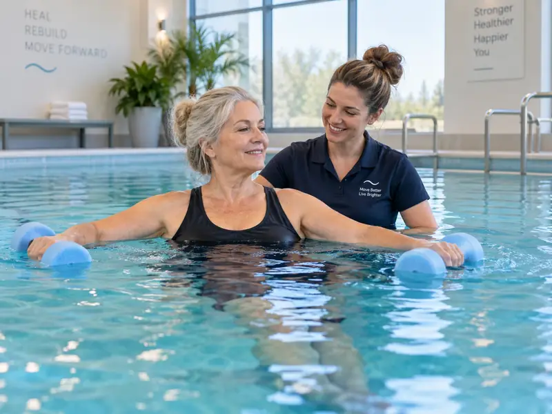

הידרותרפיה וטיפולי מים למבוגרים
תנועה במים, חיזוק, שחרור והרפיה בהתאמה ליכולת ולמטרה האישית.
למה פעילות במים יכולה להתאים למבוגרים
המים יוצרים תנאים שונים מהיבשה. הציפה יכולה להפחית עומס, וההתנגדות של המים מאפשרת עבודה הדרגתית על תנועה וחיזוק. עבור חלק מהאנשים זו סביבה נעימה שמאפשרת לנוע בקצב רגוע יותר ולבנות ביטחון בתנועה.
התאמה אישית היא חלק מרכזי
אין תכנית אחת שמתאימה לכולם. הפעילות נבנית לפי היכולת, התחושה והמטרה של כל אדם. במידת הצורך חשוב לפעול בהתאם להנחיות רפואיות רלוונטיות.
מה מיוחד במרכז עדן
- יחס אישי וקצב מותאם
- בריכות נעימות ומוקפדות
- סביבה שקטה ומכבדת
- צוות מקצועי שמכיר את התהליך
- אפשרות לשלב סוגי פעילות שונים במים לפי הצורך
למי הפעילות יכולה להתאים
למבוגרים המעוניינים בתנועה מותאמת במים, בחיזוק, בהרפיה או בפעילות שמאפשרת עבודה הדרגתית בסביבה מימית נעימה. ההתאמה נעשית באופן אישי ולא על סמך גיל בלבד.
אין לראות בתוכן הבטחה לתוצאה רפואית. התאמה נעשית באופן אישי ובהתאם לצורך.

מים, תנועה והתאמה אישית
במרכז עדן המבוגר אינו נכנס לתכנית אחידה. הפעילות נבנית לפי היכולת, התחושה והמטרה האישית, בסביבה שקטה ומבוקרת.
עומס מותאםחלק מהגישה של מרכז עדן שמעמידה את האדם, הביטחון וההתאמה האישית במרכז.
יחס אישיחלק מהגישה של מרכז עדן שמעמידה את האדם, הביטחון וההתאמה האישית במרכז.
בריכות חמימות ונעימותחלק מהגישה של מרכז עדן שמעמידה את האדם, הביטחון וההתאמה האישית במרכז.